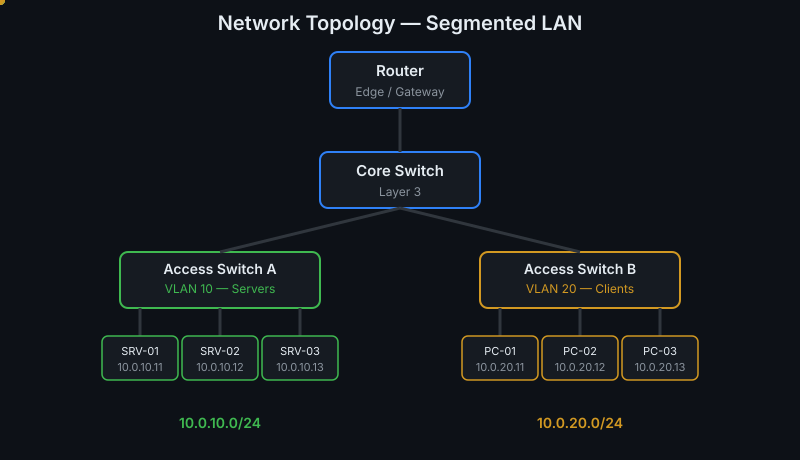
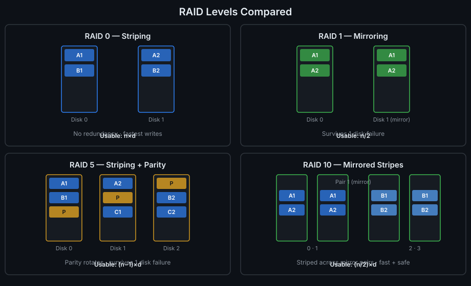
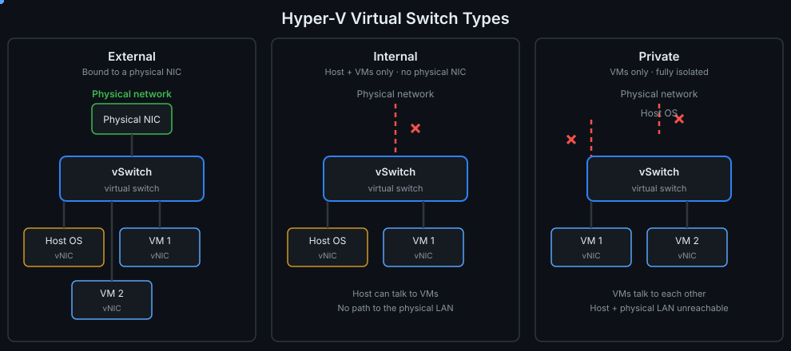

1Network Topology — Segmented LAN
Router to core switch to two VLAN access switches with hosts; animated packets flow across every link. Subnets 10.0.10.0/24 (VLAN 10 servers) and 10.0.20.0/24 (VLAN 20 clients).

2802.1Q VLAN Trunking
Two switches joined by a tagged trunk; Ethernet frames cross the link while the 4-byte 802.1Q tag (TPID 0x8100, VLAN ID) visibly inserts mid-flight for VLAN 10 and VLAN 20.
3Active Directory OU Hierarchy
The corp.local domain tree fades in level by level — four OUs, eight sub-OUs — with a pulsing "GPO linked here" badge on the Servers OU and LSDOU inheritance notes.

4Site-to-Site VPN Tunnel
Two site routers across the public Internet: IKE Phase 1 (UDP 500) handshake, IKE Phase 2 (UDP 4500 NAT-T), then the lock appears and encrypted packets stream through the IPSec tunnel.

5RAID Levels Compared
Four live panels — RAID 0 striping, RAID 1 mirroring, RAID 5 rotating parity, RAID 10 mirrored stripes — with data blocks animating into disk slots and usable-capacity formulas (n×d, n/2, (n−1)×d, (n/2)×d).

6Hyper-V Virtual Switch Types
External (bound to a physical NIC, full uplink), Internal (host + VMs only), and Private (VMs only, fully isolated) — packets flow where allowed, red ✗ marks the paths that don't exist.

7DNS Resolution — Recursive Lookup
A query dot walks the chain Client → Recursive resolver → Root → TLD (.com) → Authoritative, each server lighting up in turn, and the answer 93.184.216.34 returns over the green path.

8DHCP DORA — Four-Step Lease Process
Discover (broadcast), Offer (192.168.1.50), Request, Acknowledge appear in sequence between client and server, ending with the "Lease: 8 days" grant badge.

9SQL Server Backup Chain
A week-long timeline under the FULL recovery model: Sunday FULL, Wednesday/Saturday differentials, hourly log backups — with the restore sequence Full → Diff → Logs animated below.

10TCP 3-Way Handshake
SYN → SYN-ACK → ACK with animated packets and live sequence/acknowledgment numbers, ending in the ESTABLISHED badge. The "+1" ACK rule made visual.

11Kerberos Ticket Exchange
AS-REQ/AS-REP → TGS-REQ/TGS-REP → AP-REQ across Client, KDC, and file server — six messages, zero passwords on the wire, with ticket payloads labeled.

12OSI Model — Data Encapsulation
All seven layers with a payload that grows TCP, IP, and Ethernet headers as it descends — Segment → Packet → Frame → Bits, with PDU names at each stage.

13STP Convergence
Three switches exchange BPDUs, elect SW-A as root bridge (lowest Bridge ID), assign Root/Designated ports, and a redundant port cycles Blocking → Listening → Learning → Forwarding.

14GPO Precedence — LSDOU
Local → Site → Domain → OU policies apply in order over the same wallpaper setting; each layer overwrites the last until the OU wins — with Enforced vs Block Inheritance notes.

15Backup → Restore Flow
A week of FULL, differential, and log backups linked by an unbroken LSN chain, then the disaster-restore sequence: FULL → DIFF → LOGs in order, NORECOVERY until the final log.

16Static vs DHCP
Side-by-side race: hand-typed static IPs crawl in and collide on a duplicate (.12 conflict), while the DHCP server leases a whole row in seconds — pain vs automation.

17Firewall ACL — First Match Wins
Two packets walk the same rule list top-down: 10.1.1.5 dies at the DENY 10.0.0.0/8 rule, while 192.168.1.20 sails past it to the ALLOW 443 rule — order is everything.